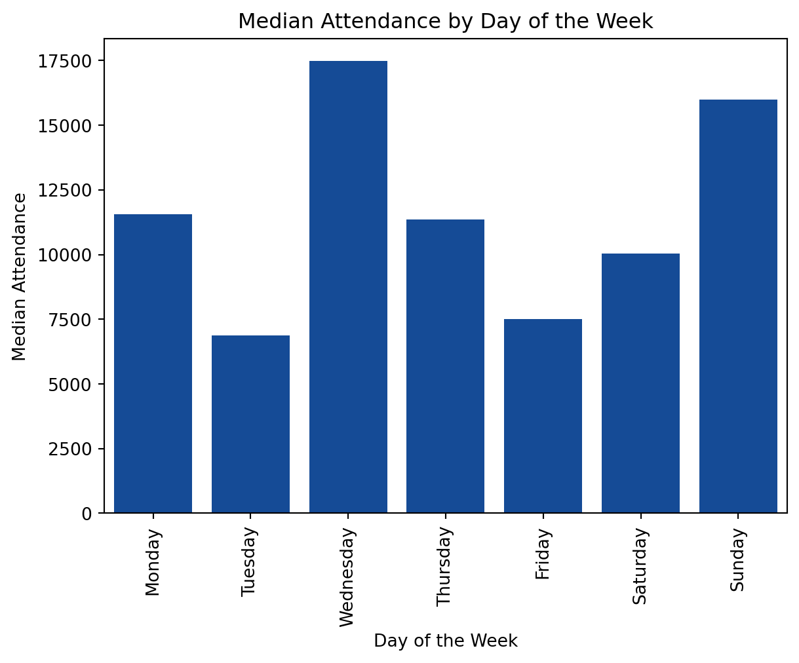
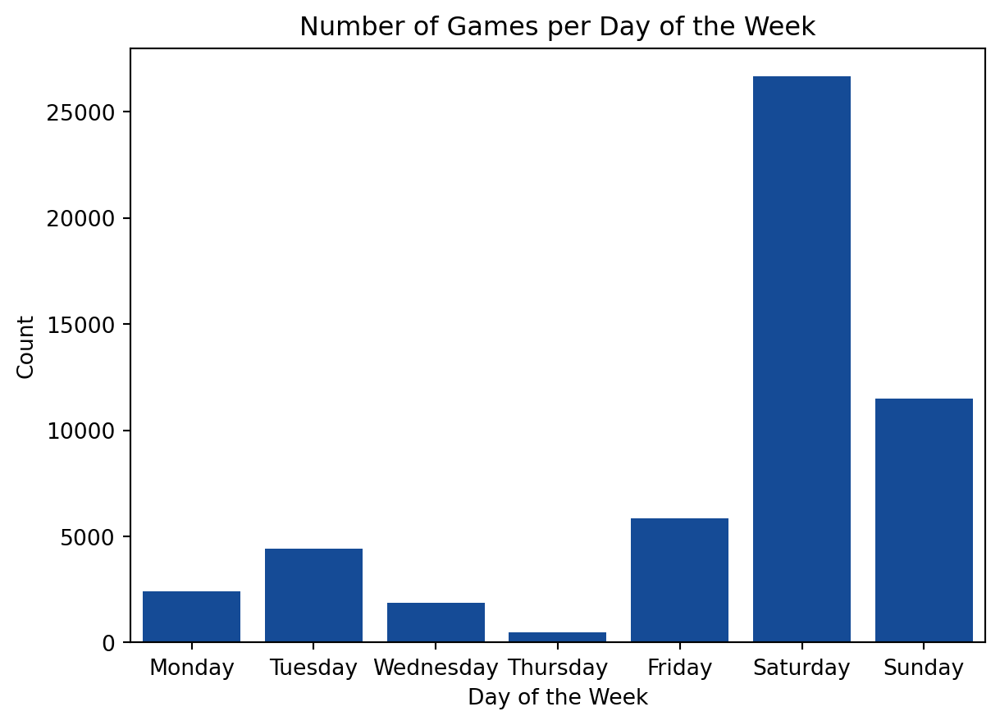
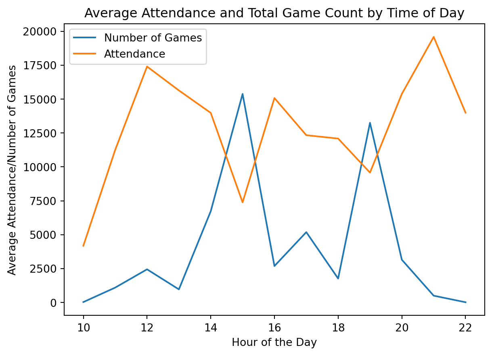
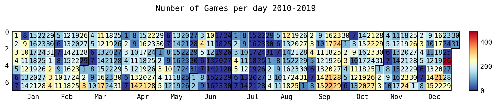
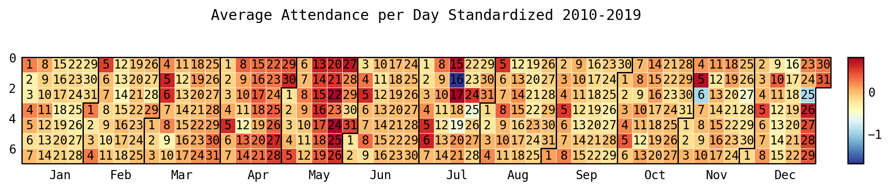

import seaborn as sns
from sklearn.ensemble import RandomForestRegressor
import numpy as np
import matplotlib.pyplot as plt
import pandas as pd
from sklearn.preprocessing import LabelEncoder
from sklearn.model_selection import train_test_split
from sklearn.metrics import mean_squared_error
from sklearn.metrics import accuracy_score, confusion_matrix, classification_report
from sklearn import metrics
from sklearn.linear_model import LinearRegression
import july
from datetime import datetime as dt
from jupyter_dash import JupyterDash
from dash import html, dcc, Input, Output
import plotly.graph_objects as go
from datetime import datetime, time
from re import sub
import re
import plotly.express as px
import pickleWill the Stadium be Buzzing or Silent?
Demand of Attendance for European Football Leagues

Why Attendance Matters
Football (Soccer), with an estimated 3.5 billion fans worldwide, is the most popular sport in the world (“The World’s Most Watched Sports - Sport for Business — Sportforbusiness.com”). In turn, a large economy and business surrounds the sport. Football teams need to be profitable to succeed. But how do these teams make money? Mainly from 5 different revenue sources: television money, prize money, player transfers, sponsorships, and matchday revenues (“How Do Football Clubs Make Money? | Football-Stadiums.co.uk — Football-Stadiums.co.uk” 2023). Out of all of these, one of the most universal is match day revenues. For many teams, the match day revenue is the lifeblood of the club as it is the sales from ticket sales, concessions, club store purchases, etc.
The attendance of a match can significantly affect a team’s match day revenue. So understanding factors affecting attendance and predicting the attendance is important. If a club could predict the number of people attending a match, they could be better prepared for it. Such as, if the match is expected to have lower attendance than desired, the club could market it differently or have special promotions to increase the attendance for that match.
There are many factors that could impact the attendance of a match. However, the factors used here are the day and time of the match, betting odds for a match, and who the away team is for any given match. Later we will also produce a random forest model to predict the attendance of matches based on these factors.
Python Packages Used
Data Collection
This project used data that was collected from two sources: worldfootball.net and Football-data.co.uk . The data that was collected from worldfootball.net was information on the match, such as the team names, the time and date of the match, and most importantly, each matches attendance. This data was scraped on January 31st, 2023. The data that was downloaded from Football-data.co.uk was primarily betting information for each game. This data was already tabulated into CSV files which were divided based on the year and league. All the files were downloaded on February 3rd, 2023.
The data that was collected spanned from 2010 to 2023. It consisted of leagues from 11 countries: England, Scotland, Germany, Italy, Spain, France, Netherlands, Belgium, Portugal, Turkey, and Greece. In total, the data contained 21 leagues from these countries.
Data Processing
Preprocessing Data
betting_data = pd.read_csv('../data/RAWDATA/RAW_betting_data.csv')
match_data = pd.read_csv('../data/RAWDATA/RAW_match_data.csv')
with open('../src/Data_Processing/key_dictionary.pkl', 'rb') as pick:
key_dict = pickle.load(pick)
def snake_case(s):
return '_'.join(
sub('([A-Z][a-z]+)', r' \1',
sub('([A-Z]+)', r' \1',
s.replace('-', ' '))).split()).lower()
betting_data['HomeTeam'] =betting_data['HomeTeam'].apply(str)
betting_data['HomeTeam'] =betting_data['HomeTeam'].apply(snake_case)
betting_data['AwayTeam'] =betting_data['AwayTeam'].apply(str)
betting_data['AwayTeam'] =betting_data['AwayTeam'].apply(snake_case)
betting_data['HomeTeam'] = betting_data['HomeTeam'].replace(key_dict)
betting_data['AwayTeam'] = betting_data['AwayTeam'].replace(key_dict)
match_data['home_team'] =match_data['home_team'].apply(str)
match_data['home_team'] =match_data['home_team'].apply(snake_case)
match_data['away_team'] =match_data['away_team'].apply(str)
match_data['away_team'] =match_data['away_team'].apply(snake_case)
match_data['Hohome_teammeTeam'] = match_data['home_team'].replace(key_dict)
match_data['away_team'] = match_data['away_team'].replace(key_dict)
month_key = {'August': '8', 'September':'9', 'October':'10', 'November': '11','December':'12', 'January':'1', 'February':'2', 'March':'3', 'April':'4', 'May':'5', 'June' : '6', 'July':'7'}
match_data['month']= match_data['month'].replace(month_key)
match_data['date'] = match_data['day_of_month'].astype(str) + "-" + match_data['month'].astype(str) + "-" + match_data['year'].astype(str)
match_data['date'] = pd.to_datetime(match_data['date'])
betting_data['Date'] = pd.to_datetime(betting_data['Date'])
merged_df = pd.merge(match_data, betting_data, left_on = ['date', 'home_team', 'away_team'], right_on = ['Date', 'HomeTeam', 'AwayTeam'], how ='left', indicator=False)
data = merged_df
data = data[data['year']<= 2019]
data = data[['home_team','away_team','home_score','away_score','date','time','day_of_week','attendance','Div','FTHG','FTAG','FTR','HTHG','HTAG','HTR','B365H','B365D','B365A','BWH','BWD','BWA','WHH','WHD','WHA','VCH','VCD','VCA','BbMx>2.5','BbAv>2.5','BbMx<2.5','BbAv<2.5']]
data = data.rename(columns = {'attendance':'raw_attendance'})
data = data[data['raw_attendance'].str.contains('\d')]
data['raw_attendance'] = data['raw_attendance'].astype(float)
# data['Capacity'] = data['Capacity'].astype(float)
def remove_non_numberics(s):
return sub('[^0-9]', '', s)
data['away_score'] = data['away_score'].apply(lambda x: re.sub('[^0-9]', '', x))
# Alter Data types:
data= data.rename(columns={ 'Div':'division'})
data['home_score']= data['home_score'].astype(int)
data['away_score'] = data['away_score'].astype(int)
data['date'] = data['date'].astype(str)
# data['time'] = data['time'].apply(lambda x: datetime.strptime(x, '%H:%M'))
data['date_time'] = data.apply(lambda row: pd.to_datetime(str(row['date']) + ' ' + str(row['time'])),axis = 1)
data['raw_attendance']= data['raw_attendance'].astype(int)
season = []
for index, rows in data.iterrows():
match_day = dt.strptime(rows['date'], '%Y-%m-%d')
# print(match_day)
year = int(dt.strftime(match_day, '%Y'))
month_day = dt.strftime(match_day, '%m-%d')
# print(int(year))
# print(type(year))
# print(month_day)
cutoff_date = dt.strftime(dt(2014,7,14), '%m-%d')
if month_day > cutoff_date:
year = year +1
season = season + [year]
else:
season = season + [year]
# def stand_dev(x): return np.std(x)
data['season'] = season
data_std = data.groupby(['home_team', 'season'])['raw_attendance'].std().reset_index()
data_std = data_std.rename(columns = {'raw_attendance':'std_attend'})
data_mean = data.groupby(['home_team', 'season']).mean().reset_index()
data_mean = data_mean[['home_team', 'season', 'raw_attendance']].rename(columns = {'raw_attendance': 'mean_attend'})
data = pd.merge(data, data_mean, on = ['home_team', 'season'])
total_data = pd.merge(data, data_std, on= ['home_team', 'season'])
total_data['standard_attend'] = (total_data['raw_attendance']-total_data['mean_attend'])/ total_data['std_attend']
total_data = total_data[total_data['division'] != 'SC2']
div_dict = {'D1':'Bundesliga', 'D2': '2. Bundesliga', 'E0':'Premier League', 'E1':'Championship',
'E2':'League 1', 'E3':'League 2','SP1':'La Liga Primera', 'SP2':'La Liga Segunda',
'B1':'Jupiler League', 'F1':'Ligue 1','F2':'Ligue 2','I1':'Serie A','I2':'Serie B',
'SC0':'Scottish Premier League', 'SC1':'Scottish Division 1', 'T1':'Fubol Ligi 1', 'P1': 'Liga 1'}
divisions_list =['D1', 'D2', 'E0', 'E1', 'E2', 'E3', 'SP1' ,'SP2', 'B1', 'F1', 'F2', 'I1', 'I2', 'SC0', 'SC1', 'T1', 'P1']
total_data['home_team'] = total_data['home_team'].str.replace('_', ' ').apply(lambda x: x.title())
total_data['away_team'] = total_data['away_team'].str.replace('_', ' ').apply(lambda x: x.title())All of the CSV files from Football-data.co.uk were combined together, resulting in two datasets, one with all of the betting data and the other with the attendance. The two datasets were to be combined on the home team name, away team name, and the date and time of the game to create one final dataset. However, issues arose as they had different naming structures for team names. For example, the team Manchester City in one dataset would be identified as “man_city” and in the other as “manchester_city”. With these different naming structures and spellings, a list of team names was created from both datasets. These lists were put through a python script that took a team from one list and compared the characters to team names in the other list. I stated with one entire team name and slowly decreasing its size, searching the other list for matches. The table below demonstrates how team names would be split up into a list of smaller strings. This would be repeated until the team list was broken up into single characters.
| Itteration | Results |
|---|---|
| 1 | man_city |
| 2 | man_cit, an_city |
| 3 | man_ci, an_cit, n_city |
| 4 | man_c, an_ci, n_cit, _city |
| … | … |
| 8 | m,a,n,_,c,i,t,y |
The gif below demonstrates the python script used to assist in matching team names from one list to another. Starting from the largest length of a team name, the program would look through the other list for any matching character combinations.

What resulted is a list of potential matching teams, with the most similar name at the top. Then I would determine from the suggestion what was the correct matching team name was. From this a key was created to make the two data sets have a matching naming structure for home and away teams. The data sets were now able to be combined. The resulting data set had 79673 rows and 172 columns, where each row represented individual match.
However, more processing was needed. Although the initial dataset collected data all the way to 2023, the data was filtered to only include 2010 to 2019. This filtering was due to the COVID-19 pandemic. During the pandemic, attendance basically ceased to occur for matches. Additionally, some leagues canceled the remaining matches for the season.
Certain leagues were removed from the dataset. The Scottish Division 2 and Division 3 leagues, as well as the Ethniki Katigoria, which is the Greek top league, were removed. This is due to them having several missing values for many variables. Some matches from a variety of leagues had missing values only for the betting variables. These matches were used during the analysis of day & time and the impact of the away team. However, they were dropped from the dataset for analysis of betting data and in the modeling.
Lastly, a few new variables were added. The first variable added was the season during which the match occurred. Although leagues end on different dates in different years, the date selected for the seasons to change was July 14th. Most leagues conclude at the beginning of June and resume at the beginning of August. July is predominantly used for international games. Although there were a couple of matches that occurred in July from 2010-2019, July 14th was the only date with zero matches played. So it was used as the cutoff point.
The other variables created were the mean and standard deviation of the home team for that season and the z-score of that individual match. The mean and standard deviation were based upon the home team’s attendance for that season. The z-score is the standardization of the match’s attendance (number of standard deviations above or below the mean) in relation to the home team’s average attendance for that particular season.
Final Dataset
The resulting dataset consisted of 53,224 rows and 29 columns. The descriptions of variables can be viewed in the data dictionary.
total_data = total_data[['home_team', 'away_team', 'date', 'time',
'day_of_week', 'raw_attendance', 'division', 'FTR',
'B365H', 'B365D', 'B365A', 'BWH', 'BWD', 'BWA',
'WHH', 'WHD', 'WHA', 'VCH', 'VCD', 'VCA', 'BbMx>2.5', 'BbAv>2.5',
'BbMx<2.5', 'BbAv<2.5', 'date_time', 'season', 'mean_attend',
'std_attend', 'standard_attend']]
total_data.head()| home_team | away_team | date | time | day_of_week | raw_attendance | division | FTR | B365H | B365D | ... | VCA | BbMx>2.5 | BbAv>2.5 | BbMx<2.5 | BbAv<2.5 | date_time | season | mean_attend | std_attend | standard_attend | |
|---|---|---|---|---|---|---|---|---|---|---|---|---|---|---|---|---|---|---|---|---|---|
| 0 | Tottenham Hotspur | Manchester City | 2010-08-14 | 12:45 | Saturday | 35928 | E0 | D | 2.40 | 3.30 | ... | 3.1 | 2.03 | 1.91 | 1.95 | 1.84 | 2010-08-14 12:45:00 | 2011 | 35892.894737 | 269.766338 | 0.130132 |
| 1 | Tottenham Hotspur | Wigan Athletic | 2010-08-28 | 15:00 | Saturday | 35101 | E0 | A | 1.25 | 5.75 | ... | 13.0 | 1.55 | 1.50 | 2.63 | 2.48 | 2010-08-28 15:00:00 | 2011 | 35892.894737 | 269.766338 | -2.935484 |
| 2 | Tottenham Hotspur | Wolverhampton Wanderers | 2010-09-18 | 15:00 | Saturday | 35940 | E0 | H | 1.40 | 4.50 | ... | 8.0 | 1.85 | 1.75 | 2.11 | 2.02 | 2010-09-18 15:00:00 | 2011 | 35892.894737 | 269.766338 | 0.174615 |
| 3 | Tottenham Hotspur | Everton Fc | 2010-10-23 | 12:45 | Saturday | 35967 | E0 | D | 2.10 | 3.25 | ... | 4.0 | 2.07 | 1.99 | 1.87 | 1.79 | 2010-10-23 12:45:00 | 2011 | 35892.894737 | 269.766338 | 0.274702 |
| 4 | Tottenham Hotspur | Sunderland Afc | 2010-09-11 | 20:00 | Tuesday | 35843 | E0 | D | 1.53 | 4.00 | ... | 7.0 | 1.90 | 1.80 | 2.06 | 1.97 | 2010-09-11 20:00:00 | 2011 | 35892.894737 | 269.766338 | -0.184955 |
5 rows × 29 columns
Date & Time
Now that the data has been processed, we can begin to look at how a variety of factors impact attendance for football matches. The first factor that will be evaluated is the date and time of individual matches. We will examine the impact of the day of the week, time of the match, and the calendar date.
time_df = total_data[[
'date', 'time', 'day_of_week', 'date_time', 'raw_attendance', 'standard_attend', 'division'
]]Day of the Week
# Grouping of the data
df_grouped_median = time_df.groupby('day_of_week')['raw_attendance', 'standard_attend'].median().reset_index()
# Making Day of the week categorical type to maintain order on graphs
day_categories = ['Monday', 'Tuesday', 'Wednesday', 'Thursday', 'Friday', 'Saturday', 'Sunday']
df_grouped_median['day_of_week'] = pd.Categorical(df_grouped_median['day_of_week'], categories= day_categories)
df_grouped_median.sort_values(by = 'day_of_week', inplace = True)Before we can make graphs and plots to analyze the attendance by day of the week, we need to group the data. For this we grouped the data by the day of the week (ex: Sunday, Monday, etc) and took the median attendance for each group.
Day of the Week Median Plot
sns.barplot(
data=df_grouped_median,
x = 'day_of_week',
y = 'raw_attendance',
color = '#0047AB'
).set(title ='Median Attendance by Day of the Week')
plt.xticks(rotation=90)
plt.xlabel('Day of the Week')
plt.ylabel('Median Attendance')
plt.show()
First, in Figure 1, the average attendance for matches is viewed by the day of the week. Wednesday and Sunday have the highest average attendance while Tuesday has the lowest. It is striking that Wednesday has the highest average attendance. Most would expect weekday matches to have lower attendance while games on weekends, especially Saturday, would have higher attendance.
Day of the Week Total Count
grouped_week_count = time_df.groupby('day_of_week').count().reset_index()
grouped_week_count['day_of_week'] = pd.Categorical(grouped_week_count['day_of_week'], categories= day_categories)
grouped_week_count.sort_values(by = 'day_of_week', inplace = True)
sns.barplot(data = grouped_week_count, x = 'day_of_week', y = 'date',
color = '#0047AB')
plt.xlabel('Day of the Week')
plt.ylabel('Count')
plt.title('Number of Games per Day of the Week')
plt.show()
Number of games per day of week divided by league
grouped_week_count_division = time_df.groupby(['day_of_week', 'division']).count().reset_index()
grouped_week_count_division['day_of_week'] = pd.Categorical(grouped_week_count_division['day_of_week'], categories= day_categories)
grouped_week_count_division.sort_values(by = 'day_of_week', inplace = True)
grouped_week_count_division = grouped_week_count_division[['day_of_week', 'division', 'date']]
total_div_number = grouped_week_count_division.groupby('day_of_week').sum().reset_index()
# print(total_div_number)
rose_df = pd.merge(grouped_week_count_division, total_div_number, on= 'day_of_week')
rose_df['pct'] = rose_df['date_x']/rose_df['date_y']
# print(rose_df)
rose_df['League'] = rose_df['division']
div_dict2 = {'D1':'Bundesliga (1st Div)', 'D2': '2. Bundesliga (2nd Div)', 'E0':'Premier League (1st Div)', 'E1':'Championship (2nd Div)',
'E2':'League 1 (3rd Div)', 'E3':'League 2 (4th Div)','SP1':'La Liga Primera (1st Div)', 'SP2':'La Liga Segunda (2nd Div)',
'B1':'Jupiler League (1st Div)', 'F1':'Ligue 1 (1st Div)','F2':'Ligue 2 (2nd Div)','I1':'Serie A (1st Div)','I2':'Serie B (2nd Div)',
'SC0':'Scottish Premier League (1st Div)', 'SC1':'Scottish Division 1 (2nd Div)', 'T1':'Fubol Ligi 1 (1st Div)', 'P1': 'Liga 1 (1st Div)'}
rose_df = rose_df.replace({'League':div_dict2})
rose_df
colors = px.colors.qualitative.Light24 + px.colors.qualitative.Alphabet
fig = px.bar_polar(rose_df, theta = 'day_of_week', r = 'pct', color = 'League', color_discrete_sequence= colors)
fig.show()Figure 2 explains the suprising results that Wednesday had the highest average attendance instead of Saturday. Saturday had by far the highest number of games in comparison to any day of the week while Wednesday had significantly fewer games. This results in Saturday having more games from lower leagues, which tend to have lower attendance, decreasing the average attendance, while Wedneday had more games played by top leagues increasing its average attendance. This is confirmed in Figure 3. Looking at the proportion of games on Saturday, lower leagues had a much higher proportion of games. Wednesday’s games on the other hand were predominantly composed of the top leagues in England, France, and Italy. The top leagues tend to have more highly attended games; hence Wednesday has the highest average attendance.
Time of Day
df_grouped_median_tod= time_df.groupby(time_df['date_time'].dt.hour).median()Plot Number of games by time of day
df_grouped_count = time_df.groupby(time_df['date_time'].dt.hour).count()
# print(df_grouped_count)
df_grouped_count = df_grouped_count['raw_attendance'].reset_index()
df_grouped_count['count'] = df_grouped_count['raw_attendance']
df_grouped_count = df_grouped_count[['date_time', 'count']]
# df_grouped_count= df_grouped_count.rename(columns = {'date':'count'})
# print(df_grouped_count)
df_count_atted = pd.merge(
df_grouped_count,df_grouped_median_tod, on = 'date_time')
# df_count_atted = df_count_atted.drop(columns= ['capacity_filled'])
df_count_atted.rename(
columns = {'raw_attendance': 'Attendance', 'count': "Number of Games"},
inplace= True
)
# print(df_count_atted)
melted_count_attend = pd.melt(
df_count_atted, value_vars=['Number of Games', 'Attendance'],
id_vars= 'date_time')
# print(melted_count_attend)
sns.lineplot(
data = melted_count_attend, x = 'date_time', y = 'value', hue = 'variable')
plt.title('Average Attendance and Total Game Count by Time of Day')
plt.xlabel('Hour of the Day')
plt.ylabel('Average Attendance/Number of Games')
plt.legend().set_title('')
plt.show()
The time and day of a match resulted in a similar situation as the day of the week. In Figure 4, there were dips in attendance at 3 pm and 9 pm; however, these were also the most attended times for matches. 12 pm and 11 pm matches had the highest attendance on average however had a lower amount of games. So similarly with day of the week, the more matches that occured, the average attendance is skewed lower, while when less matches occur, the average attendance is skewed higher.
Calendar Date
Set up Data for Calendar Plots
calendar_plot_data = total_data
calendar_plot_data['month_day'] = calendar_plot_data['date_time'].dt.strftime('%m-%d')The last aspect of the day & time factor is the calendar date of a match. This is evaluated using the calendar plots below.
Trends in Quantity of Matches
Code
date_of_year = calendar_plot_data.groupby('month_day').count()
date_of_year['count'] = date_of_year['standard_attend']
date_of_year = date_of_year['count'].sort_values().reset_index()
# print(date_of_year)
date_of_year['total_date'] = '2024-' + date_of_year['month_day']
date_of_year['total_date']= pd.to_datetime(date_of_year['total_date'], format = "%Y-%m-%d")
events = pd.Series(date_of_year['count'].values.tolist(), index = date_of_year['total_date'].values.tolist())
july.heatmap(
dates = date_of_year['total_date'],
data = date_of_year['count'],
date_label = True, cmap = 'RdYlBu_r',
fontsize =10,
weekday_label=False,
year_label= False,
title = 'Number of Games per day 2010-2019',
month_grid=True,
colorbar= True, dpi =1200)
plt.show()
Before looking at the attendance, it’s important to view trends in when matches actually occur. In Figure 5, there are very few games played from mid-June to the end of July. This is most likely attributed to European leagues predominantly being on break during these months due to FIFA international breaks. During this break, players typically return to their national teams to play in international competitions and, every four years, the World Cup. Another significant period of time is the Christmas holiday. Christmas has one of the lowest total number of games occurring. However, December 26th, or Boxing Day, had the highest number of games played out of any date.
Trends in Attendance of Matches
Calendar Plot of Attendance
attend_date = calendar_plot_data.groupby('month_day').mean()
attend_date['count'] = attend_date['standard_attend']
attend_date = attend_date['count'].sort_values().reset_index()
attend_date['total_date'] = '2024-' + attend_date['month_day']
attend_date['total_date'] = pd.to_datetime(
attend_date['total_date'], format = "%Y-%m-%d")
events = pd.Series(
attend_date['count'].values.tolist(),
index = attend_date['total_date'].values.tolist())
july.heatmap(
dates = attend_date['total_date'],
data = attend_date['count'],
cmap='RdYlBu_r', date_label = True,
fontsize =10, weekday_label=False,
year_label= False,
title = 'Average Attendance per Day Standardized 2010-2019',
month_grid=True,
colorbar= True, dpi =1200)
plt.show()
Now looking at the attendance for these matches based on their calendar date, some trends appear. First, there is a grouping of higher-than-average attended matches in May. This can most likely be attributed to European seasons ending. In turn, these matches have a higher weight to fans due to teams vying for promotion (moving up a league), attempting to prevent relegation (moving down a league), and earning placement into European competitions such as UEFA Champions league and the Europa League. Additionally, with holidays there is an effect on attendance. First, November 6th, which is All Saint’s Day, saw a decrease in attendance. Christmas had lower attendance, while Boxing Day to New Year’s Eve had greater attendance than what is seen in the rest of December and January.
Away Team Impact
away_team_impact = total_data.groupby(['away_team', 'division'])['standard_attend'].mean().reset_index()The next factor viewed is the impact of the away team on attendance. We are looking at how who the away team is impacts the attendance for the home team. For this, the standardized attendance was grouped by the away teams and then averaged. The results can be seen below. You can select what leagues you would like to view and the top number of teams from that league. If it is not loading click here.
Top Teams in the Biggest Leagues
Top 3 Away Teams Top League
away_team_top_3 = pd.DataFrame(columns = ['away_team', 'division', 'standard_attend'])
for i in divisions_list:
temp_impact_df = away_team_impact[away_team_impact['division'] == i].sort_values('standard_attend',ascending = False).head(3)
away_team_top_3 = pd.concat([away_team_top_3, temp_impact_df], axis = 0)
top_league_away = away_team_top_3[away_team_top_3['division'].isin(['E0', 'I1', 'F1', 'SP1', 'D1'])].replace({'division':div_dict})
sns.barplot(data = top_league_away, x = 'standard_attend', y = 'away_team', hue = 'division', dodge = False)
plt.title("Away Team's Impact on Attendance: Top 3 teams per Top League")
plt.xlabel('Mean Attendance Increase')
plt.ylabel('Away Team')
plt.legend(bbox_to_anchor=(1.05, 1), loc='upper left', borderaxespad=0)
plt.show()
In Figure 7, we see the top 3 teams with the greatest impact on attendance in the top league in Germany, England, Spain, France, and Italy. The teams with the greatest impact on the home team’s attendance are all big-name teams that are globally marketed. They have historical and current success within their league. For instance, in La Liga Primera, the three teams, Real Madrid, FC Barcelona, and Atletico Madrid, are the only teams that have won the league since 2004 (“Sportskeeda” 2023), and in turn have the greatest increase in attendance for their league.
Greatest Away Team Impact - English Leagues
Top 3 Away Teams English League’s plot
top_england_away = away_team_top_3[away_team_top_3['division'].isin(['E0', 'E1', 'E2', 'E3'])].replace({'division':div_dict})
sns.barplot(data = top_england_away, x = 'standard_attend', y = 'away_team', hue = 'division', dodge = False)
plt.title('Away Teams Impact on Attendance: Top 3 teams per English League')
plt.xlabel('Mean Attendance Increase')
plt.ylabel('Away Team')
plt.legend(bbox_to_anchor=(1.05, 1), loc='upper left', borderaxespad=0)
plt.show()
Looking at teams in lower leagues, similar trends appear. Figure 8 shows the lower leagues in England. All of the teams shown here have had historical success. For some of the teams, such as Leeds United and Coventry City, the success was in the past. Coventry City was in the top division of English Football from 1967 to 2001, winning the FA Cup in 1968 “Coventry City” (2023). Leeds United is an even better example of historic success, winning the first division in the 1968-69, 1973-74, and 1991-92 seasons “Leeds United Club Achievements” (2023). Both of these teams have had historical success in their past, however their performances have declined in the modern era, forcing them to drop leagues. Other teams here, such as Newcastle, West Ham United, and Sunderland, were at the top level of football during this time period, however, were relegated by one or two leagues during that time. With that, they still have an impact, increasing attendance for the home teams. So, teams that have had historical success or recently were relegated from higher leagues are seen to have an impact on the home team’s attendance.
Betting Odds
The final factor used in evaluating attendance was the betting odds for an individual match. Betting odds were used as a method to show favorability and public perception of a match. It shows the current perceived strength of each team.
Comparing Betting Data Sources
Betting Data Results
bet_dataset = total_data[['raw_attendance', 'division', 'FTR',
'B365H', 'B365D', 'B365A', 'BWH', 'BWD', 'BWA', 'WHH', 'WHD',
'WHA', 'VCH', 'VCD', 'VCA', 'BbMx>2.5', 'BbAv>2.5', 'BbMx<2.5',
'BbAv<2.5']]
b365_conditions = [(bet_dataset['B365H'] < bet_dataset['B365A']) & (bet_dataset['B365H'] < bet_dataset['B365D']),
(bet_dataset['B365A'] < bet_dataset['B365H']) & (bet_dataset['B365A'] < bet_dataset['B365D']),
(bet_dataset['B365D'] < bet_dataset['B365A']) & (bet_dataset['B365D'] < bet_dataset['B365H'])]
b365_vals = ['H', 'A', 'D']
bet_dataset['B365_Result'] = np.select(b365_conditions,b365_vals)
bw_conditions = [(bet_dataset['BWH'] < bet_dataset['BWA']) & (bet_dataset['BWH'] < bet_dataset['BWD']),
(bet_dataset['BWA'] < bet_dataset['BWH']) & (bet_dataset['BWA'] < bet_dataset['BWD']),
(bet_dataset['BWD'] < bet_dataset['BWA']) & (bet_dataset['BWD'] < bet_dataset['BWH'])]
bw_vals = ['H', 'A', 'D']
bet_dataset['BW_Result'] = np.select(bw_conditions,bw_vals)
wh_conditions = [(bet_dataset['WHH'] < bet_dataset['WHA']) & (bet_dataset['WHH'] < bet_dataset['WHD']),
(bet_dataset['WHA'] < bet_dataset['WHH']) & (bet_dataset['WHA'] < bet_dataset['WHD']),
(bet_dataset['WHD'] < bet_dataset['WHA']) & (bet_dataset['WHD'] < bet_dataset['WHH'])]
wh_vals = ['H', 'A', 'D']
bet_dataset['WH_Result'] = np.select(wh_conditions,wh_vals)
vc_conditions = [(bet_dataset['VCH'] < bet_dataset['VCA']) & (bet_dataset['VCH'] < bet_dataset['VCD']),
(bet_dataset['VCA'] < bet_dataset['VCH']) & (bet_dataset['VCA'] < bet_dataset['VCD']),
(bet_dataset['VCD'] < bet_dataset['VCA']) & (bet_dataset['VCD'] < bet_dataset['VCH'])]
vc_vals = ['H', 'A', 'D']
bet_dataset['VC_Result'] = np.select(vc_conditions,vc_vals)The dataset gathered had different sources of betting odds. Some were removed before the final dataset due to too many missing values, but the betting companies that remained were Bet365, Bet&Win, William Hill, and VC Bet. `
Betting Data Compared to Actual Match Result
def betting_accuracy_vis(name, axis):
b365_data = bet_dataset[[name, 'FTR']].dropna()
# print(b365_data[name].value_counts())
b365_data = b365_data[b365_data[name]!= '0']
b365_data = b365_data.groupby(['FTR',name]).size()
b365_data = b365_data.reset_index(name = 'count')
FTR_result = b365_data[[name,'count']].rename(columns = {'count':'total'})
FTR_result = FTR_result.groupby([name]).sum().reset_index()
# print(FTR_result)
b365_data = pd.merge(b365_data, FTR_result, on =name)
total_count = b365_data['count'].sum()
# print(total_count)
b365_data['pct'] = b365_data['count']/b365_data['total'] *100
# print(b365_data)
b365_data = b365_data.pivot(index = 'FTR', columns = name, values = 'pct')
# print(b365_data)
fig = sns.heatmap(data = b365_data, annot= True, ax = axis)
plt.ylabel('Match Result')
# plt.xticks(['Win', 'Draw', 'Loss'])
# plt.yticks(['Win', 'Draw', 'Loss'])
# plt.title(name + ' Accuracy in predicting Actual Result')
return fig
result_name_list = ['B365_Result', 'BW_Result', 'WH_Result', 'VC_Result']
# for i in result_name_list:
# betting_accuracy_vis(i)
figure, ax = plt.subplots(2,2)
betting_accuracy_vis('B365_Result', ax[0,0])
betting_accuracy_vis('BW_Result', ax[0,1])
betting_accuracy_vis('WH_Result', ax[1,0])
betting_accuracy_vis('VC_Result', ax[1,1])
plt.show()
Note
For the Results H = Home team Wins, A = Away team Wins, D = Draw.
Tip
The number within each cell is the percentage of predicted results occuring. For instance, when B365 predicted the away team to win, 27% of the time the home team won, 27% of the time the teams drew, and 47% of the time the away team won.
The heatmaps seen in Figure 9, show the distribution of what the betting company favored as the result and what the actual result of a match was. The difference in the individual betting companies was slim to non-existant. Due to this, we assume that all the betting data is comparable. For the remainder of the project, Bet 365 is used because it had one of the fewest numbers of missing values.
Betting Odds
bet_data = total_data
bet_data = bet_data.dropna(subset = ['B365H', 'B365A'])
h_fav = []
attend_increase = []
for index, rows in bet_data.iterrows():
if rows['B365H'] < rows['B365A']:
h_fav = h_fav + [True]
else:
h_fav = h_fav + [False]
if rows['standard_attend'] >= 0:
attend_increase = attend_increase + [True]
else:
attend_increase = attend_increase + [False]
bet_increase_bool = bet_data
bet_increase_bool['home_fav'] = h_fav
bet_increase_bool['attend_increase'] = attend_increase
bet_bool = bet_increase_bool[['home_fav', 'attend_increase','raw_attendance']]
bet_bool = bet_bool.groupby(['home_fav', 'attend_increase']).count().reset_index().rename(columns = {'home_fav':'Home Team Favorited', 'attend_increase':'Increase In Attendance'})For analyzing the effect of betting odds in the data set, two boolean variables were created. The first variable reflected whether or not there was an increase in attendance. If the z-score for the match was positive or 0, it was determined to have an increased attendance and if it was negative, it decreased attendance. The second was to determine if the home team was favored. If the betting odds of the home team winning was a smaller number than the betting odds for the away team winning, it was determined that the home team was favored. And if the home team betting odds were greater than the away team betting odds, then it was deterimined as not favored.
Predicted Goals in Relation to Attendance
count_pct = []
for index, rows in bet_bool.iterrows():
# print('----------')
goals = rows['Home Team Favorited']
# print(goals)
total_count_goals = bet_bool[bet_bool['Home Team Favorited'] == goals]['raw_attendance'].values
total_count_goals = sum(total_count_goals)
# print(total_count_goals)
percent_total = rows['raw_attendance']*100/total_count_goals
# print(percent_total)
count_pct = count_pct + [percent_total]
bet_bool['pcnt_values'] = count_pct
# bet_bool = bet_bool.pivot_table(values = 'pcnt_values', index = 'Home Team Favorited', columns = 'Increase In Attendance')
# print(bet_bool)
# sns.heatmap(bet_bool,annot= True)
sns.barplot(data =bet_bool, x = 'Home Team Favorited', y = 'pcnt_values', hue = 'Increase In Attendance')
plt.gca().invert_xaxis()
# plt.gca().invert_yaxis()
plt.title('Attendance Impact Depending if Home Team is Favored')
plt.ylabel('Percent')
plt.show()
Figure 10 shows what occurs to attendance when the home team is favored to win. When the home team is favored, the games will typically have less-than-average attendance for that match. However, if the Home team is not favored, the matches are more likely to have a greater-than-average attendance. This could demonstrate that fans like to see underdog performances, and if their team is favored, they do not view the match as important.
Odds of Goals > 2.5
goal_data = total_data.dropna(subset = ['standard_attend', 'BbAv>2.5','BbAv<2.5'])
increase_attend = []
higher_goals = []
for index, rows in goal_data.iterrows():
if rows['standard_attend'] >=0:
increase_attend = increase_attend + [True]
else:
increase_attend = increase_attend + [False]
if rows['BbAv>2.5'] <= rows['BbAv<2.5']:
higher_goals = higher_goals + [True]
else:
higher_goals = higher_goals +[False]
goal_data['increase_attend'] = increase_attend
goal_data['higher_goals'] = higher_goals
df = goal_data[['higher_goals', 'increase_attend']]
df = df.value_counts().reset_index(name= 'count')
count_pct = []
df_grouped_higher_goal_sum = df.groupby('higher_goals')['count'].sum().reset_index()One of the betting variables that is looked at is the betting odds on the total number of goals scored in a game. The betting odds are if the game will have more than 2.5 or less than 2.5 goals. With this vairable, another boolean variable was created. If the betting odds for goals being greater than 2.5 was a smaller number than goals being less than 2.5, it was determined that there was expected to have more than 2.5 goals scored. If the betting odds stated that goals being less than 2.5 had a smaller number than goals being greater than 2.5, it was stated that their was expected to be less than 2.5 goals scored.
Predicted Goals in relation to attendance
for index, rows in df.iterrows():
# print('----------')
goals = rows['higher_goals']
# print(goals)
total_count_goals = df_grouped_higher_goal_sum[df_grouped_higher_goal_sum['higher_goals'] == goals]['count'].values
total_count_goals = sum(total_count_goals)
# print(total_count_goals)
percent_total = rows['count']*100/total_count_goals
# print(percent_total)
count_pct = count_pct + [percent_total]
df['count_pct'] = count_pct
# total_count = df['count'].sum()
# df['pct'] = df['count']*100/total_count
df = df.rename(columns = {'higher_goals':'Odds of Goals over 2.5 is favored', 'increase_attend': 'Increased Attendance'})
df2 = df.pivot(index = 'Odds of Goals over 2.5 is favored', columns = 'Increased Attendance', values = 'count_pct')
# print(df)
# sns.heatmap(goal_data = df2, annot= True)
# plt.gca().invert_xaxis()
# plt.gca().invert_yaxis()
# plt.title('Predicted Goals in Relation to Attendance')
# plt.show()
sns.barplot(data =df, x = 'Odds of Goals over 2.5 is favored', y = 'count_pct', hue = 'Increased Attendance')
plt.gca().invert_xaxis()
plt.ylabel('Percent')
plt.xticks([0,1], ['Less than 2.5 Goals','More than 2.5 Goals'])
plt.xlabel('Predicted amount of goals scored')
plt.title('Predicted Goals in Relation to Attendance')
plt.show()
Figure 11 shows how attendance changes with different predicted number of goals. When the match is expected to be a higher scoring match, the attendance is almost equally likely to increase or decrease. However, when the match is not predicted to have over 2.5 goals scored, the attendance is more likely to be negatively impacted in relation to the season average.
Modeling
All of this analysis and looking at different factors that would impact attendance have led to predicting the attendance of a game. Given the complexity of the data, a random forest regression model was implemented. Random Forest Regression is a supervised machine learning model. It uses multiple decision trees to make the best model for the data. All of the factors stated before, except the amount of goals predicted to be scored, were used within the model to predict the attendance of a given match.
Random Forest Model
model_dataset = total_data
model_dataset = model_dataset.dropna(subset = ['B365A', 'BWH', 'WHH', 'VCD','BbMx>2.5',
'BbAv>2.5', 'BbMx<2.5', 'BbAv<2.5', 'std_attend', 'standard_attend'])
model_dataset = model_dataset.drop(['date_time'], axis =1)
obj_data = model_dataset.select_dtypes(include=['object']).copy()
column_obj_name = obj_data.columns.values.tolist()
before_encode = model_dataset[['division', 'home_team', 'away_team']]
label_encoder = LabelEncoder()
post_encode = model_dataset[['division', 'home_team', 'away_team']]
encode_compare = pd.concat([before_encode, post_encode], axis = 1, ignore_index=True)
encode_compare.columns = ['division', 'home_team', 'away_team', 'division_encode', 'home_encode', 'away_encode']
# print(encode_compare)
div_key = pd.Series(encode_compare.division.values, index = encode_compare.division_encode).to_dict()
home_key = pd.Series(encode_compare.home_team.values, index = encode_compare.home_encode).to_dict()
away_key = pd.Series(encode_compare.away_team.values, index = encode_compare.away_encode).to_dict()
for obj in column_obj_name:
model_dataset[obj] = label_encoder.fit_transform(model_dataset[obj])
model_dataset = model_dataset.astype(float)
model_dataset = model_dataset.dropna()
x = model_dataset.drop(['raw_attendance', 'standard_attend'], axis = 1)
x = x[['home_team', 'away_team', 'division', 'date', 'time', 'day_of_week','B365H', 'B365D',
'B365A']]
y = model_dataset['raw_attendance']
x_train, x_test, y_train, y_test = train_test_split(x,y, test_size = .2, random_state = 11)
# ------------------------------------------------------------------------------------------------------------------------------------------------
# Random Forest
# The Random Forest Model was Performed outside the file and will be imported into the document.
# ------------------------------------------------------------------------------------------------------------------------------------------------
random_forest_model = RandomForestRegressor(n_estimators = 1000, random_state= 11)
random_forest_model.fit(x_train, y_train)
# ------------------------------------------------------------------------------------------------------------------------------------------------
# random_forest_model = pickle.load(open('../src/Modeling/Random_forest_model.sav', 'rb'))
y_predict = random_forest_model.predict(x_test)
mae = metrics.mean_absolute_error(y_test, y_predict)
mse = metrics.mean_squared_error(y_test, y_predict)
mape = metrics.mean_absolute_percentage_error(y_test, y_predict)
r2 = metrics.r2_score(y_test, y_predict)
result_df = pd.DataFrame(np.array([['Mean Absolute Error', mae], ['Mean Squared Error', mse],
['Mean Absolute Percentage Error', mape], ['r\u00b2', r2]]), columns = ['Metric', 'Score'])
result_df| Metric | Score | |
|---|---|---|
| 0 | Mean Absolute Error | 2242.3920883037226 |
| 1 | Mean Squared Error | 15610003.050400194 |
| 2 | Mean Absolute Percentage Error | 0.32326021839155267 |
| 3 | r² | 0.9360736390652507 |
The Random Forest model used 1000 decision trees to build the model. The results of the model can be seen in the table above. It resulted in a fairly high r2 score of over 0.93. Which means approximately 93% of the variability in attendance is accounted for by our variables. Additionally, the mean absolute error score of approximately 2300 showing that the model’s prediction is on average off by 2300 people. The table below shows examples from the test set of matches with their predicted and actual attendance. If it is failing to load click here.
Below is another way to visualize the accuracy of the model. You can select the deviation from the actual attendance to see the percentage of the predictions that were accurate within that range.
Percentage perdicted data within a range
model_result = x_test
model_result['raw_attendance'] = y_test
model_result['predicted_attend'] = y_predict
model_result['division'] = model_result['division'].astype(int)
model_result['home_team'] = model_result['home_team'].astype(int)
model_result['away_team'] = model_result['away_team'].astype(int)
model_result = model_result.replace({'division':div_key, 'home_team': home_key, 'away_team':away_key})
in_50 = []
in_500 =[]
in_750 =[]
in_1000 =[]
in_1500 =[]
for index, rows in model_result.iterrows():
if rows['predicted_attend'] < rows['raw_attendance']+50 and rows['predicted_attend'] > rows['raw_attendance']-50:
in_50 += [True]
else:
in_50 += [False]
if rows['predicted_attend'] < rows['raw_attendance']+500 and rows['predicted_attend'] > rows['raw_attendance']-500:
in_500 += [True]
else:
in_500 += [False]
if rows['predicted_attend'] < rows['raw_attendance']+750 and rows['predicted_attend'] > rows['raw_attendance']-750:
in_750 += [True]
else:
in_750 += [False]
if rows['predicted_attend'] < rows['raw_attendance']+1000 and rows['predicted_attend'] > rows['raw_attendance']-1000:
in_1000 += [True]
else:
in_1000 += [False]
if rows['predicted_attend'] < rows['raw_attendance']+1500 and rows['predicted_attend'] > rows['raw_attendance']-15000:
in_1500 += [True]
else:
in_1500 += [False]
model_result['in_50'] = in_50
in_50_grouped = model_result.groupby('in_50').count()['date'].reset_index()
in_50_grouped['pct'] = in_50_grouped['date']/sum(in_50_grouped['date'])
in_50_grouped_div = model_result.groupby(['in_50', 'division']).count()['date'].reset_index()
in_50_grouped_div['pct'] = in_50_grouped_div['date']/sum(in_50_grouped_div['date'])
model_result['in_500'] = in_500
in_500_grouped = model_result.groupby('in_500').count()['date'].reset_index()
in_500_grouped['pct'] = in_500_grouped['date']/sum(in_500_grouped['date'])
in_500_grouped_div = model_result.groupby(['in_500', 'division']).count()['date'].reset_index()
in_500_grouped_div['pct'] = in_500_grouped_div['date']/sum(in_500_grouped_div['date'])
model_result['in_750'] = in_750
in_750_grouped = model_result.groupby('in_750').count()['date'].reset_index()
in_750_grouped['pct'] = in_750_grouped['date']/sum(in_750_grouped['date'])
in_750_grouped_div = model_result.groupby(['in_750', 'division']).count()['date'].reset_index()
in_750_grouped_div['pct'] = in_750_grouped_div['date']/sum(in_750_grouped_div['date'])
model_result['in_1000'] = in_1000
in_1000_grouped = model_result.groupby('in_1000').count()['date'].reset_index()
in_1000_grouped['pct'] = in_1000_grouped['date']/sum(in_1000_grouped['date'])
in_1000_grouped_div = model_result.groupby(['in_1000', 'division']).count()['date'].reset_index()
in_1000_grouped_div['pct'] = in_1000_grouped_div['date']/sum(in_1000_grouped_div['date'])
model_result['in_1500'] = in_1500
in_1500_grouped = model_result.groupby('in_1500').count()['date'].reset_index()
in_1500_grouped['pct'] = in_1500_grouped['date']/sum(in_1500_grouped['date'])
in_1500_grouped_div = model_result.groupby(['in_1500', 'division']).count()['date'].reset_index()
in_1500_grouped_div['pct'] = in_1500_grouped_div['date']/sum(in_1500_grouped_div['date'])
fig = go.Figure()
fig.add_trace(
go.Pie(labels = in_50_grouped['in_50'], values= in_50_grouped['pct'], name = '50', sort = False)
)
fig.add_trace(
go.Pie(labels = in_500_grouped['in_500'], values = in_500_grouped['pct'], name = "500", sort = False)
)
fig.add_trace(
go.Pie(labels= in_750_grouped['in_750'], values= in_750_grouped['pct'], name = '750', sort = False)
)
fig.add_trace(
go.Pie(labels = in_1000_grouped['in_1000'], values = in_1000_grouped['pct'], name = '1000', sort = False)
)
fig.add_trace(
go.Pie(labels = in_1500_grouped['in_1500'], values = in_1500_grouped['pct'], name= '1500', sort = False)
)
fig.update_layout(
updatemenus=[
dict(
active=0,
buttons=list([
dict(label="50",
method="update",
args=[{"visible": [True, False, False, False, False]},
{"title": "Prediction within 50 of Actual Attendance"}]),
dict(label="500",
method="update",
args=[{"visible": [True, True, False, False, False]},
{"title": "Prediction within 500 Actual Attendance"}
]),
dict(label="750",
method="update",
args=[{"visible": [False, False, True, False]},
{"title": "Prediction within 750 Actual Attendance"}]),
dict(label="1000",
method="update",
args=[{"visible": [False, False, False, True,False]},
{"title": "Prediction within 1000 Actual Attendance"}]),
dict(label="1500",
method="update",
args=[{"visible": [False, False, False, False,True]},
{"title": "Prediction within 1500 Actual Attendance"}]),
]),
)
])
fig.update_layout(title_text="Prediction within 50")
fig.show()References
“Coventry City.” 2023. Club History - Coventry City. https://www.ccfc.co.uk/club/club-history/.
“How Do Football Clubs Make Money? | Football-Stadiums.co.uk — Football-Stadiums.co.uk.” 2023. https://www.football-stadiums.co.uk/articles/how-do-football-clubs-make-money/.
“Leeds United Club Achievements.” 2023. Transfermarkt. https://www.transfermarkt.us/leeds-united/erfolge/verein/399.
“Sportskeeda.” 2023. https://www.sportskeeda.com/football/la-liga-winners.
“The World’s Most Watched Sports - Sport for Business — Sportforbusiness.com.” https://sportforbusiness.com/the-worlds-most-watched-sports/.